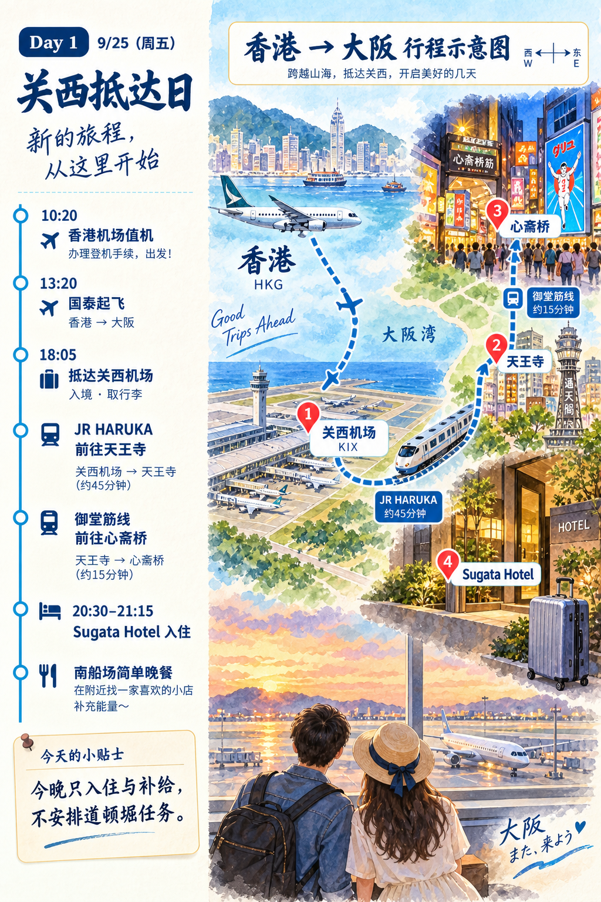
Day 1 · 关西抵达日香港 → 关西机场 → 心斋桥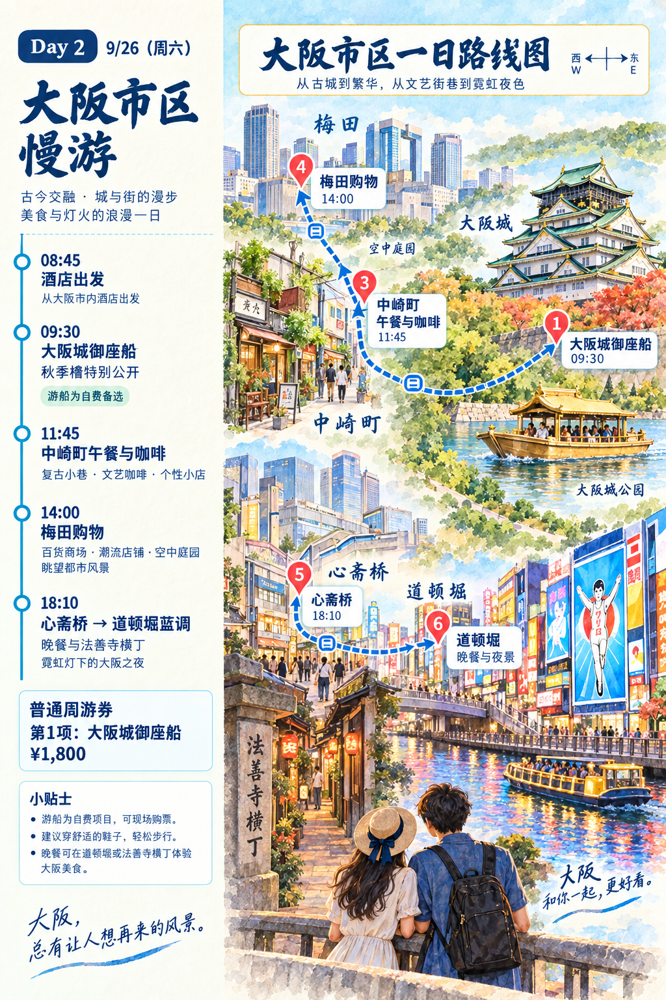
Day 2 · 大阪市区慢游大阪城 → 中崎町 → 梅田 → 道顿堀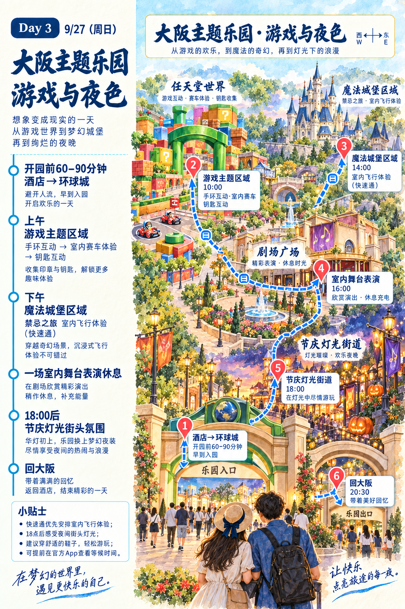
Day 3 · 主题乐园游戏区域 → 魔法城堡 → 夜间灯光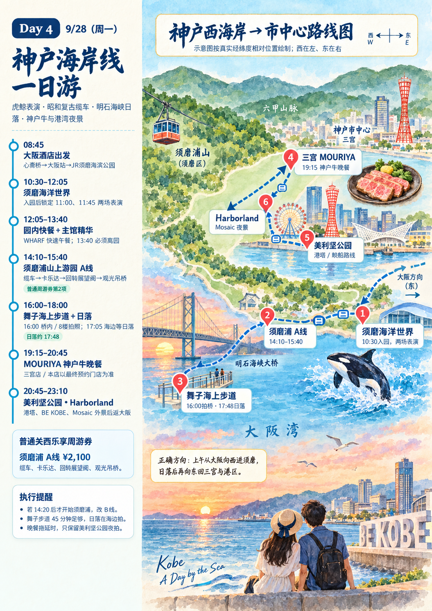
Day 4 · 神户海岸线须磨 → 须磨浦 → 舞子 → 三宫港区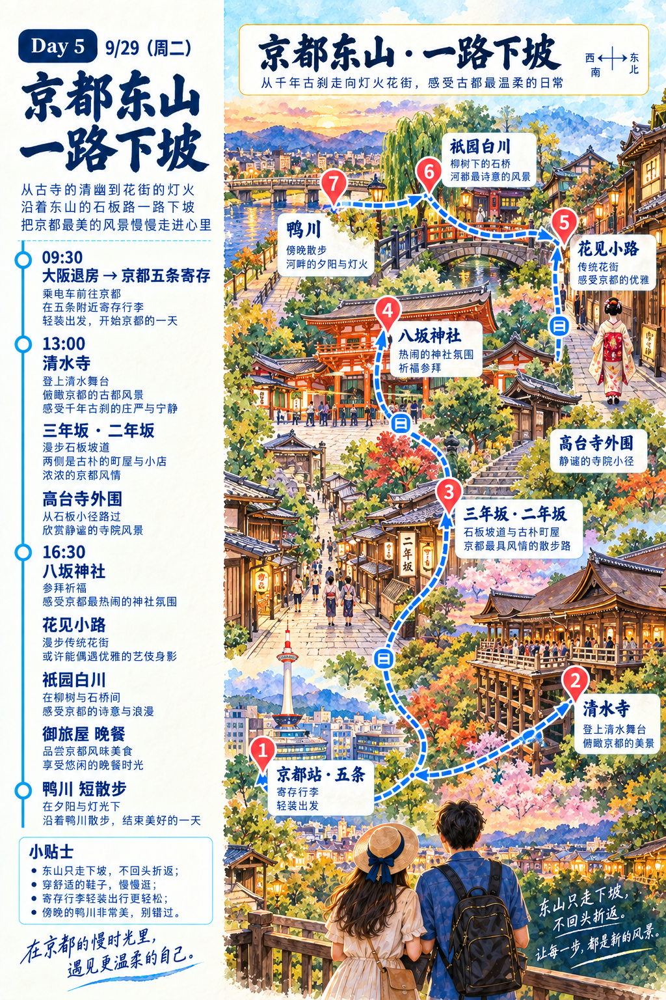
Day 5 · 京都东山清水寺 → 祇园 → 鸭川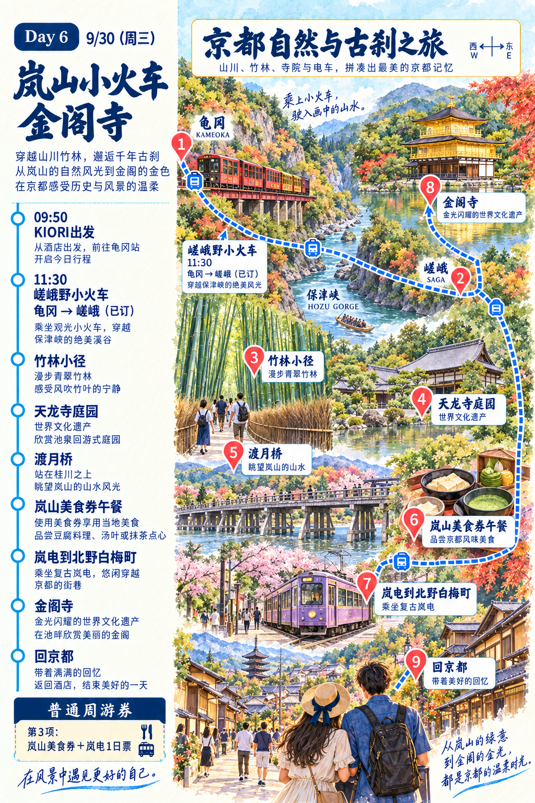
Day 6 · 岚山与金阁寺小火车 → 竹林 → 金阁寺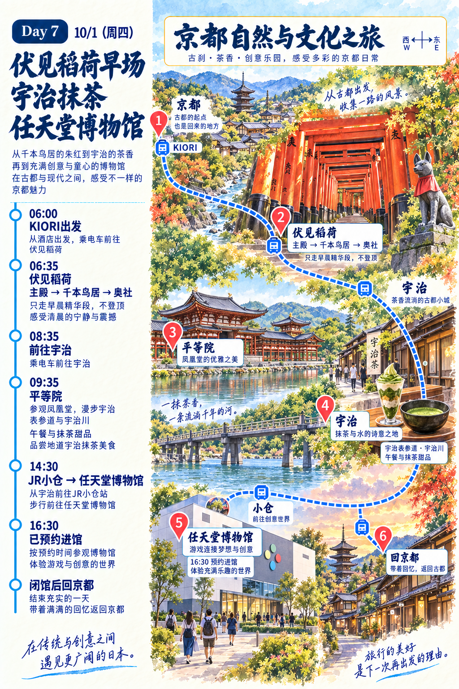
Day 7 · 伏见稻荷与宇治鸟居 → 抹茶 → 任天堂博物馆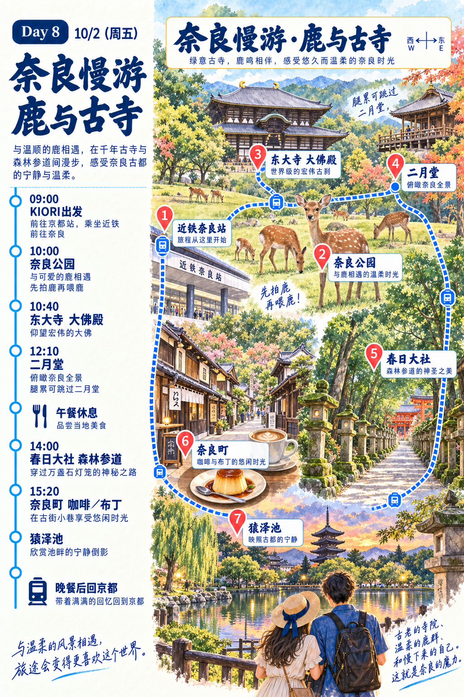
Day 8 · 奈良慢游鹿 → 东大寺 → 春日大社 → 奈良町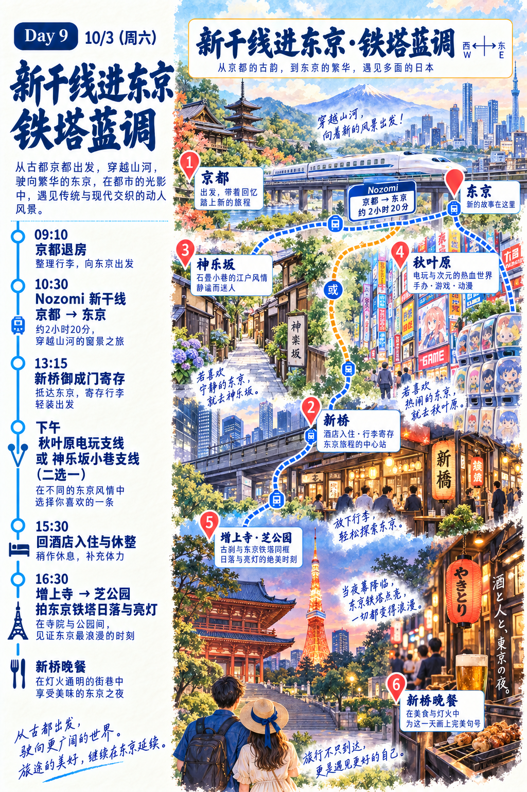
Day 9 · 新干线进东京京都 → 新桥 → 东京铁塔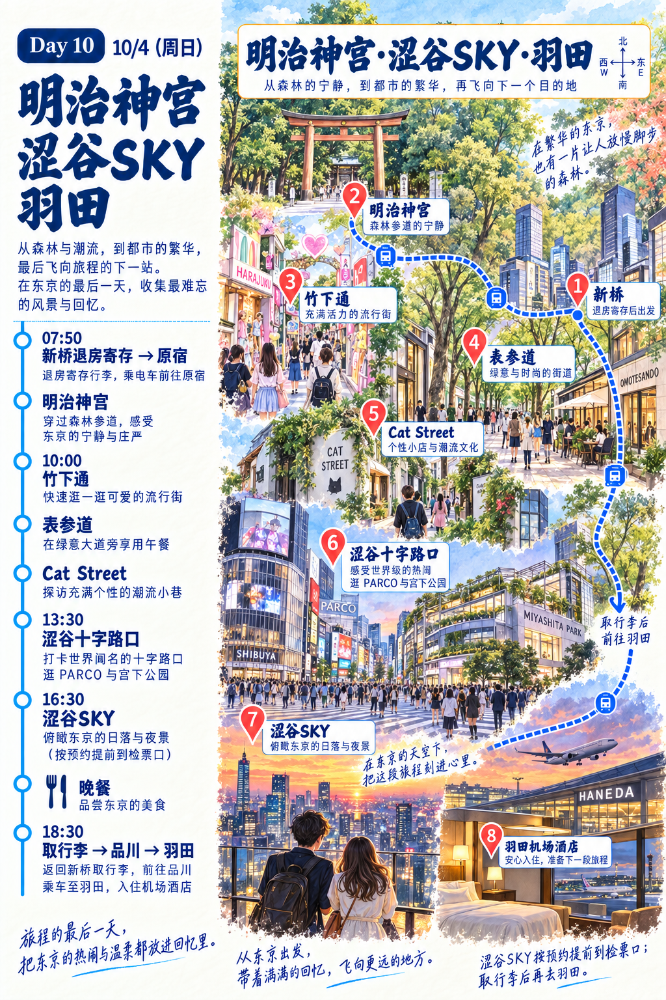
Day 10 · 涩谷与羽田明治神宫 → 涩谷SKY → 羽田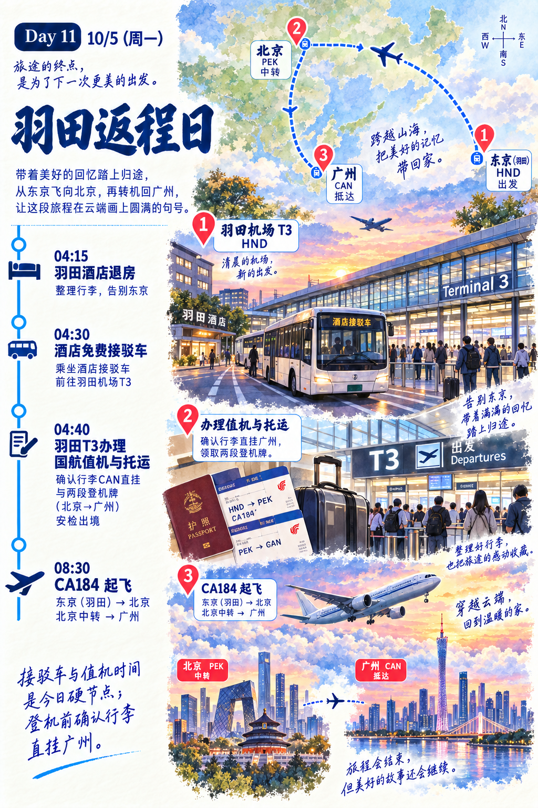
Day 11 · 羽田返程日羽田 → 北京中转 → 广州